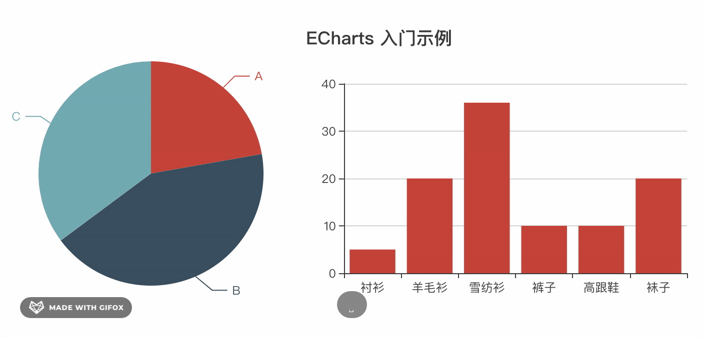

Vue实用echarts组件封装
这篇文章发布于 2020/10/31，归类于 Vue
标签：
Vue echarts组件封装，echarts组件
vue中使用echarts可以自己封装一个简单的组件。实现每次更新数据只需要修改options的值即可，并自带loading、暂无数据slot。先来看看使用demo

// main.js 全局引入
import VueChart from "@guoqzuo/vue-chart";
Vue.use(VueChart);然后在任意组件里可以直接使用 z-echart
<!-- 固定宽柱状图，不自动resize -->
<div style="width:300px; height: 300px">
<z-chart :options="bar" :loading="loading" :autoResize="false"> </z-chart>
</div>
<!-- 宽高自适应，resize后自动渲染，当hasData为false时显示暂无数据的slot内容-->
<div style="width: 50%; height: 50vh">
<z-chart :options="pie" :hasData="hasData">
暂无数据
</z-chart>
</div>来看看z-chart组件的实现细节，这里把echart单独用一个组件处理，在z-echart组件里引入，并加入loading、无数据的slot显示处理
<template>
<!-- z-chart -->
<div class="z-chart-container">
<base-chart
v-if="!loading && hasData"
:options="options"
v-on="$listeners"
v-bind="$attrs"
></base-chart>
<base-loading v-if="loading"></base-loading>
<!-- no data slot -->
<slot v-if="!loading && !hasData"></slot>
</div>
</template>base-chart代码如下，它主要做了三个操作
- 使用options初始化图表
- 如果是百分比大小的图，resize时，自动重绘
- 使用watch监听options改动，如果有改动为了防止渲染异常，直接dispose销毁echart实例，重新加载
<template>
<!-- base chart -->
<div class="z-chart" ref="z-echart"></div>
</template>
<script>
import echarts from "echarts";
import { addListener, removeListener } from "resize-detector";
import { debounce } from "lodash-es";
export default {
name: "BaseChart",
props: {
options: {
type: Object,
required: false
},
autoResize: {
type: Boolean,
required: false,
default: true
}
},
data() {
return {};
},
created() {
// 监听 options 改动，改动后重绘数据
this.$watch(
"options",
() => {
this.refresh();
},
{ deep: true }
);
},
mounted() {
this.init();
},
beforeDestroy() {
this.destroy();
},
methods: {
init() {
let chart = echarts.init(this.$refs["z-echart"]);
chart.setOption(this.options || {});
this.chart = chart;
// 当元素宽高改变时resize执行重绘
if (this.autoResize) {
this.__resizeHanlder = debounce(
() => {
chart.resize();
},
100,
{ leading: true }
);
addListener(this.$el, this.__resizeHanlder);
}
},
destroy() {
// 销毁实例，防止 柱状图 动态切换到 饼图 时，柱状图部分属性依旧留存的问题
this.chart.dispose();
this.chart = null;
this.autoResize && removeListener(this.$el, this.__resizeHanlder);
},
// 销毁后重绘，用于options变更后刷新图表
refresh() {
this.destroy();
this.init();
}
}
};
</script>
<style lang="less" scoped>
.z-chart {
width: 100%;
height: 100%;
}
</style>- 完整测试demo地址 | github
- z-chart组件源码 | github
- 更加高级的封装，可以查看 ve-charts源码